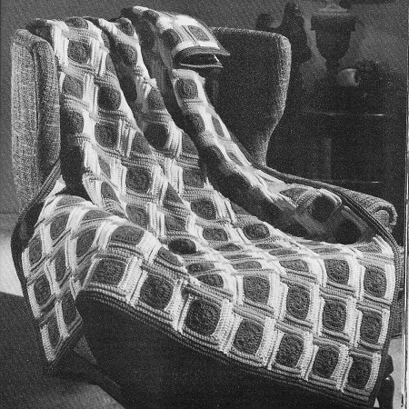

Cobbled
Street Afghan
The Cobble Street Afghan is a captivating crochet project that captures the essence of a quaint, cobblestone street. With its textured stitches and unique color palette, it evokes a sense of charm and nostalgia.
MATERIALS:
COATS & CLARK'S "RED HEART" KNITTING WORSTED, 4 Ply
("Tangle-Proof" Pull-Out Skeins): 26 ounces of No. 649 Olive
Green; 20 ounces each of No. 253 Tangerine and No. 230 Yellow.
Crochet Hook Size G.
Afghan measures 45 x 67 1/2 inches (excluding border). Each
motif measures 4 1/2 inches square.
GAUGE: 4 sc = 1. inch; 4 rows = 1 inch.
MOTIF (Make 150) Starting at center with Green, ch 4.
1st rnd: Make 11 dc in 4th ch from hook. Join with sl st
to top of ch-4.
2nd rnd: Ch 3, skip joining, dc in next dc, (in next dc
make 2 dc, ch 1 and 2 dc; dc in next 2 dc) 3 times; in next dc
make 2 dc, ch 1 and 2 dc. Join to top of ch-3.
3rd rnd: Ch 1, sc in joining, sc in next 3 dc, 3 sc in
next ch-1 sp for corner; (sc in next 6 dc, 3 sc in next ch-1 sp)
3 times; sc in next 2 dc. Join to first sc. Break off and
fasten.
NOTE: Hereafter work in the back loop only of
each sc.
Now work bands in rows as follows:
First Band: 1st row: With right side facing, attach
Tangerine to back loop of 2nd sc of any 3-sc corner group, sc in
same place, sc in next 9 sc. Ch 5, turn.
2nd row: Sc in 2nd ch from hook, sc in next 3 ch, sc in
next 10 sc. Ch 1, turn.
3rd and 4th rows: Sc in each sc across. Ch 1, turn. Break
off and fasten at end of last row.
Second Band: 1st row: Attach Yellow to the back loop of
2nd sc of the 3-sc group preceding the group where yarn was
attached, sc in same place and in next 8 sc, sc in same place
where yarn was attached on previous band, sc in the end sc of
each of the 4 rows worked on last band. Ch 1, turn.
2nd, 3rd and 4th rows: Repeat 3rd row of last band. Break
off and fasten at end of last row.
Third Band: With Tangerine work as for Second Band.
Fourth Band: Attach Yellow in same place where last sc
was made on first row of First Band, then repeat Second Band.
Sew starting chain of First Band to the adjacent edge of the
Fourth Band. Sew motifs together, having the Yellow bands in one
direction and the Tangerine bands in the opposite direction.
Make 10 rows of 15 motifs.
BORDER 1st rnd: With Green and right side facing, attach
yarn to the back loop of first sc on any motif, ch 1, sc in same
place, sc in back loop of each of next 13 sc, * sc in the end sc
of each row of next motif, sc in the back loop of each of next
14 sc on same motif. Repeat from * around, making 3 sc in the
back loop of the last sc of each corner motif and ending with an
sc in the end sc of each row of first motif. Join with sl st to
first sc. Ch 1, turn.
Next 4 rnds: Sc in joining, making 3 sc in the back loop
of the 2nd sc of each corner group, sc in the back loop of each
sc around. Join. Ch 1, turn.
6th rnd: Working through both loops of each sc, sl st in
each sc around. Join. Break off and fasten. Block to
measurements.
HOME